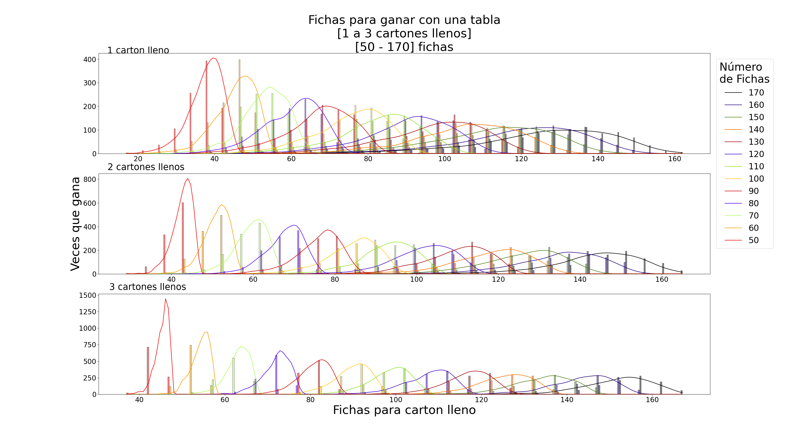
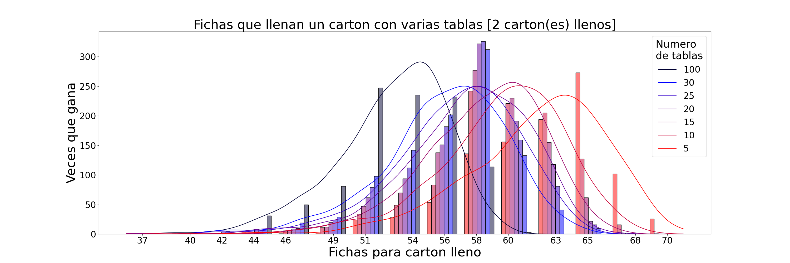
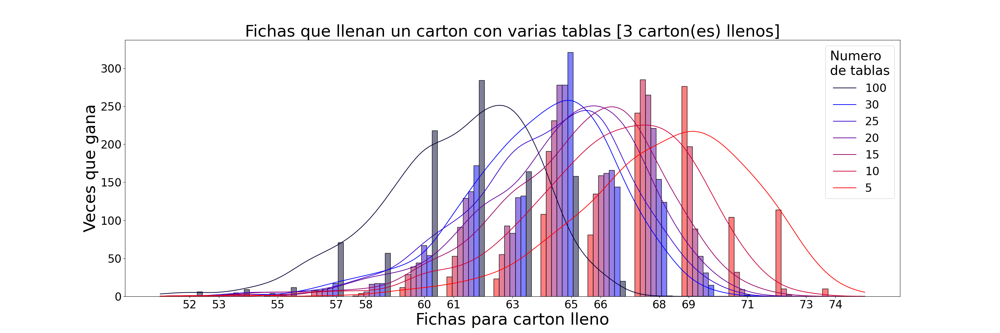
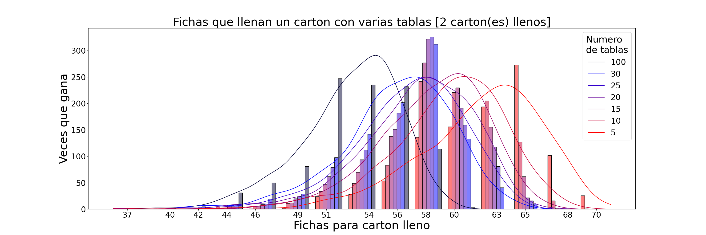
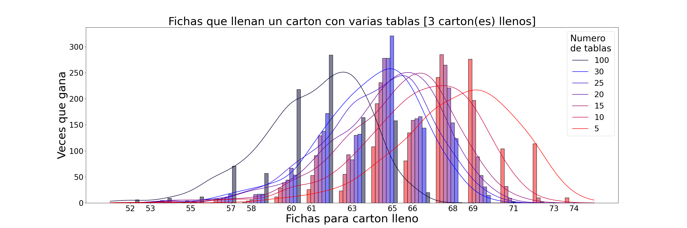
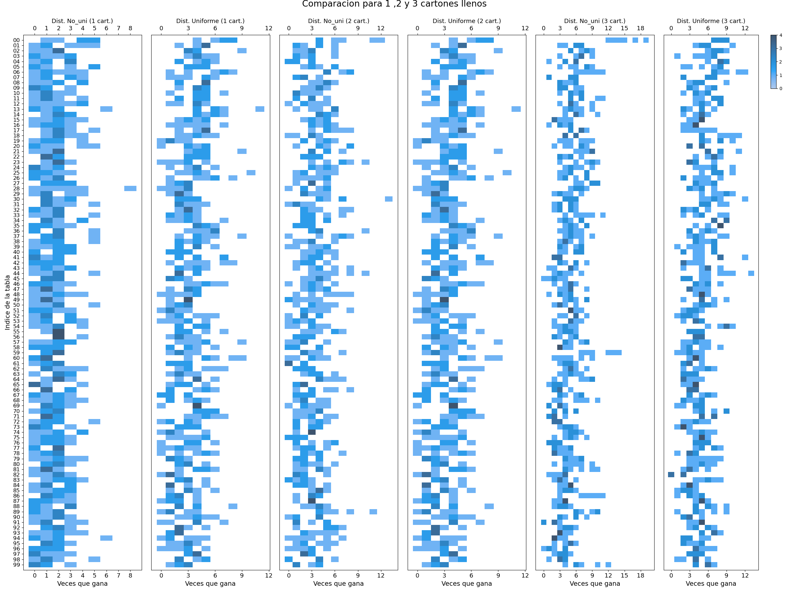

Lo que te motiva hace la diferencia en el resultado, porque las buenas acciones solo pueden ser vistas por nuestros corazones. Cada dos semanas se celebran unas loterias en Cumaná que empezaron a llamar mi atención, y es que a pesar de situarse bien lejos de mi casa aun así podia escuchar toda la música dese mi cuarto; un día decidí ir, una de mis tias vendía los cartones y al asistir me encontré un mar de personas sentadas en mesas imporvisadas donde llenaban sus cartones en la oscuridad de la noche, algunos aprovechaban la luz de los postes y otros se ayudaban con sus telefonos moviles, aquella imagen me pareció hermosa, como si cada persona manisfestara su esperanzan con el brillo de su lámpara. Con tanta gente reunida, me invadió la curiosidad por conocer qué movía a tanta gente a jugar Loteria.
Recordé que la lotería se remonta al siglo II AC, los chinos y los britanicos las usaron para financiar sus proyectos de expansión. Me pareció un buen negocio a primera vista, porque todos las partes ganan más de lo que tenian antes. Para los que no conocen el juego, la loteria a la que fuí conciste en un conjunto de 140 fichas que estan dentro de una bolsa y un número grande de tablas, que contiene 6 cartones como los del bingo pero estos estan conformados por 2 filas y 4 columnas de fichas ordenadas dentro de un un rectangulo, en teoría no debería haber cartones repetidos, entonces al momento de iniciar el juego una mano inocente va sacando las fichas de la bolsa una a una y se gana cuando se llena uno, dos o tres cartones.
Calculé las tablas posibles sin repetir ninguna para 140 fichas y el resultado fue más de 4 trillones de tablas (4,976e11), no obstante, un sorteo con todos esos cartones sería bien aburrido porque harían falta 8, 16 o 24 fichas para llenar los respectivos cartones según sea el sorteo, en una noche se celebran 8 sorteos en total, el primero y el séptimo tienen un premio de 1200 y 800 $ respectivamente, se necesitan llenar 2 cartones y cabe destacar que el séptimo sorteo premia con un mercado que oscila entre la mitad del primer premio y 200 $ más, del 2do al 6to sorteo necesitamos llenar solo un cartón para optar a un premio de 300 $ y una sorpresa, y en el último sorteo se necesitan 3 cartones llenos para optar al mayor premio que ese día había estado en 13000 $.
Como les insinué al principio, el tipo de motivación que usemos para alcanzar nuestras metas hace la diferencia, a mí me venció la curiosidad de saber más y decidí hacer un análisis estadístico sobre el juego; mi premura me hizo tomar el camino más sencillo, en vez de esperar 5 años para registrar un número significativos de datos, me fui por el camino fácil y simulé muchos, pero muchísimos sorteos y aprendí bastante sobre el juego.
De manera inconsciente todos desarrollamos habilidades matemáticas y más en el área estadística. Todos aprendemos a contar desde pequeños y es aquí donde adquirimos estas habilidades y las usamos como caminar, observar, entre otras, un ejemplo muy común sucede cuando compramos comida muy seguido, con el tiempo nos vamos a percatar con nuestros sentidos si nos dan más o menos de lo que pagamos. Otro ejemplo sería en una cola de bus cuando intentamos saber cuántos buses faltan para llegar a nuestro turno. La evidencia de esto estaba en la reacción de las personas que tenía a mi alrededor a las fichas cantadas en el sorteo, es inevitable no escuchar sus comentarios como '¡Ahora vienes a salir CdTM...!', '¡Primera vez!', '¡Otra vez el burro!' y el que más llamó mi atención 'el martillo tiene tiempo que no sale, ¡La semana pasada salía todo el tiempo!'.
Siempre me hago recordar que la inteligencia colectiva no es una panacea para todos los problemas y desafíos que enfrentamos, pero puede ser una herramienta valiosa para abordarlos de manera efectiva. Aquellas voces anónimas se convirtieron en mi inspiración, por lo que me decidí a contestar la siguiente pregunta. ¿Como se puede ganar en este juego?
todas las experiencias nos dejan un saldo positivo, porque, hasta el momento no he ganado ningún sorteo, sin embargo, la satisfacción de comprender un problema mientras lo vives debería valer más que materializar una victoria basada en el azar. Porque lo que dura es bueno y la plata siempre se gasta. Además, el anhelo de un futuro donde conseguimos un premio nos lleva a más penas, porque sencillamente no se sabe cuánto vamos a esperar, ¿o Sí?
Luego de comprender que la ciencia no me iba a dar una respuesta concisa, me dediqué a estudiar el juego para sabér como funciona.
Aproveché y visité al mono poto, le expliqué como era el juego y que me gustaría ganar y él me recomendó que escogiera cartones con muchas fichas repetidas, que jugara en sorteos pequeños, donde no hubiese tanta gente y que, además, jugara con varias tablas que fueran diferentes, que si salían mucho algunas fichas estas estuvieran repetidas en varios cartones de una misma tabla. También me contó que poco a poco iba a darme cuenta cuando estaban por cantar lotería y si variaban las fichas que se repetían, él desconfiaba de lo equilibrado de estas, porque citándolo dijo, 'fichas hechas a mano dentro de una bolsa, eso no es nada justo'. La verdad esto último se lo creo porque en un dado perforado, los números que más salen son: 6,5 y 4, porque las caras de los números opuestos pesan menos por tener menos perforaciones. Le tomé la palabra y me resultó, porque ahora lleno más los cartones, pero esto no me ayudaba comprender como funcionaba el juego, le pedí ayuda a otra amistad y me dijo que podía hacer todas las loterías que quisiera con un computador y así podía entender por qué El poto mono acertó con su consejo.
| Conf | Primera | Segunda | Tercera | Cuarta |
|---|---|---|---|---|
| N.Fchs | [50-170] 10 en 10 | 80 | 80 | 80 |
| C.win | [1,2,3] sd(1) | [1,2,3] Unico | [1,2,3] Mismo | [1,2,3] Mismo |
| N.Cart. | 1 | [5-30] 5/5 | 100 | 100 |
| dist | Unfrm | Unfrm | Unfrm | NoUnfrm |
| N.Rond | 1k x C/U | 1k x C/U | [5k,2k,1k] | [5k,2k,1k] |
Hice varias simulaciones, unas para ver el cómo influía el número de fichas, otra para ver como influía el número de cartones, una tercera para ver cómo era una lotería con fichas aleatorias y por último una cuarta para ver como influía unas fichas pseudoaleatorias en los resultados. para esto último anoté las fichas cantadas de tres sorteos, de esta manera pude hacer que las fichas en el computador salieran de forma parecida al sorteo real. Luego de tantas loterías virtuales pude ver por qué el mono poto decía lo de los cartones diferentes, quizás usted ya se lo imaginó, pero traten de entender el siguiente gráfico. cuando hay mayor número de fichas, el rango de fichas cantadas con la que se consigue ganar un sorteo se va ensanchando, por eso vemos una montaña bien alta y empinada en rojo para 50 fichas y una montaña bajita pero achatada en negro cuando hay 170 fichas, el resto de los picos se van achatando a medida que aumento el número de fichas, es decir, cantarán lotería entre un rango más grande de fichas cantadas a medida que tenemos más fichas jugando, esto también se nota en el siguiente gráfico, donde se ve cómo influye el número de cartones llenos, al necesitar más cartones llenos, necesitamos más fichas para ganar pero, también se gana en un rango menor de fichas cantadas, es decir, la loma es más empinada cuando llenamos 3 cartones comparada con la loma del caso donde ganamos con un solo cartón de la tabla, Por eso la sombra de la línea gris es más delgada que la sombra de la línea roja y azul.

cuando hay mayor número de fichas, el rango de fichas cantadas con la que se consigue ganar un sorteo se va ensanchando, por eso vemos una montaña bien alta y empinada en rojo para 50 fichas y una montaña bajita pero achatada en negro cuando hay 170 fichas, el resto de los picos se van achatando a medida que aumento el número de fichas, es decir, cantarán lotería entre un rango más grande de fichas cantadas a medida que tenemos más fichas jugando, esto también se nota en el siguiente gráfico, donde se ve cómo influye el número de cartones llenos, al necesitar más cartones llenos, necesitamos más fichas para ganar pero, también se gana en un rango menor de fichas cantadas, es decir, la loma es más empinada cuando llenamos 3 cartones comparada con la loma del caso donde ganamos con un solo cartón de la tabla, Por eso la sombra de la línea gris es más delgada que la sombra de la línea roja y azul.
Hasta ahora tenemos como influyen por separado el número de cartones que necesitamos llenar en el número de fichas cantadas para loterías con diferentes números de fichas, es decir que, con una tabla jugando y 140 fichas, necesitaríamos entre 100 y 120 fichas para llenar un cartón de la tabla la mayoría de las veces, y, entre 125 y 135 fichas para llenar 3 cartones de la tabla la mayoría de las veces.
Cuando agregamos más cartones el gráfico va cambiando, por ejemplo, si jugamos con todos los cartones posibles sin repetir ninguno, ¿Cuantas fichas tienen que cantarse para que se llene 1 cartón? Pues resulta que solo 8 fichas y si es que están todas las combinaciones posibles, este hecho ya nos da la idea de que a medida que aumenta el número de tablas en juego, la cantidad de fichas cantadas antes de cumplir la condición para ganar va a disminuir, eso se aprecia en la siguientes graficas.
 



Esto podría ser un indicador para saber contra cuantos estamos jugando en promedio, porque, del mismo modo que usted no sabe cuánto es exactamente 1 minuto, tampoco va a saber en qué ficha exacta van a cantar lotería, sin embargo, es posible que se aproxime a acertarlo y más ahora que conoce los datos anteriores; esta habilidad varía entre individuos, pero es útil al momento de identificar si hay o no un truco, aprovecho para resaltar lo que dijo el mono poto sobre el equilibrio de las fichas en la bolsa. Y es que me tomé la libertad de hacer el registro de tres sorteos.
Antes de ver el conteo de fichas, me gustaría mostrar cómo se vería el contraste entre una baraja aleatoria y una baraja con diferente peso, por ejemplo, las fichas más pesadas y al fondo salen menos que las livianas que quedan en la superficie. Para emular esto, le di una ventaja del 20% a las fichas de la primera tabla. Aclaro que las fichas de la primera tabla también están repartidas en los demás cartones.

En estos gráficos tenemos 100 filas que representan 100 tablas enumeradas de la 00 a la 99 y señaladas en la barra vertical, También tenemos el total de veces que se llena algún cartón de la tabla representada en la barra horizontal. Se toman los datos de 1000 sorteos simulados cambiando el balance de la baraja para cada forma de ganar, bien sea con 1, 2 o 3 cartones llenos.
Lo que parece más complicado de comprender son las marcas azules, cuando una marca se hace más oscura significa que varios cartones de los 6 que contiene la tabla se llenan el mismo número de veces, el ojo más detallista puede notar que con una barajada uniforme los cuadrados azules son más dispersos que la baraja trucada, si no logra notarlo, tenga en cuenta que debe existir un equilibrio, es decir todas las veces que ganan todos los cartones deben sumar 1000. Al existir una ventaja sobre las fichas del primer cartón de un 20 %, las diferencias son algo sutiles, aunque, podemos notar que cuando hay ventaja existen más cartones que nunca se llenaron porque hay más casillas oscuras en cero, esto también se evidencia en que los cartones sin ventaja se completan menor número de veces. La ventaja se hace más evidente cuando jugamos con 3 cartones llenos, porque es fácil de ver que la tabla 00 gana más veces en comparación con las demás.

Esto no es determinante, estamos contrastando miles de rondas de juego simuladas contra apenas 24 sorteos con 1600 fichas cantadas; sin embargo, basándome en la inteligencia colectiva, mucha gente a mi alrededor comentó en cada lotería a que asistí, que en el sorteo del premio mayor salen fichas diferentes que al del resto de sorteos, lo que no debería ser posible si la baraja estuviera bien equilibrada, porque. si se trata de las mismas fichas durante toda la noche, fichas con una forma y un peso, dentro de una bolsa con esquinas, todo hecho a mano, es muy natural que una ficha salga más que otra como vemos en el histograma general, pero, que 7 de 8 sorteos tengan un ritmo muy diferente al del último, donde se reparte el premio más grande y que esto suceda en todas las celebraciones es algo que me deja en duda.
Por el momento no me interesa hacer conclusiones precipitadas que comprometan mi palabra, sin embargo, le invito, que al igual que yo haga su propio análisis.
Por ejemplo, cuando usted note que las loterías se están ganando muy rápido es posible que haya al menos el doble de gente que otras veces, y, si tardan mucho en ganar la polla cuando hay tanta gente puede sospechar de algo raro, como dije anteriormente, el análisis muestra lo que debería ser habitual, no desestima la posibilidad de ganar la polla con 24 fichas cantadas, pero si le dice que no es normal si esto sucede a menudo. Y si le preocupa al igual que a mí que le tomen el pelo, mi abuela me recomendó que después que se ganen la polla, le pidan al joven que baraja que termine de sacar todas las fichas, si todos completan sus cartones entonces tenga la seguridad que al menos tuvo la posibilidad de ganar.
En lo que a mí respecta, este análisis me ayudó a darme cuenta de que, aunque la inteligencia colectiva puede carecer de memoria y no siempre producir resultados inmediatos, esta puede tener un impacto significativo en la resolución de problemas y la toma de decisiones a largo plazo. Al escuchar y valorar las voces del anonimato, podemos aprovechar el poder de la sabiduría colectiva para abordar los desafíos que enfrentamos y crear un futuro más próspero y sostenible para todos.
Listado de las referencias bibliográficas citadas en el poster
Agradecimientos a personas o instituciones que hayan contribuido de alguna manera en la investigación
Información de contacto de los autores para preguntas o comentarios adicionales